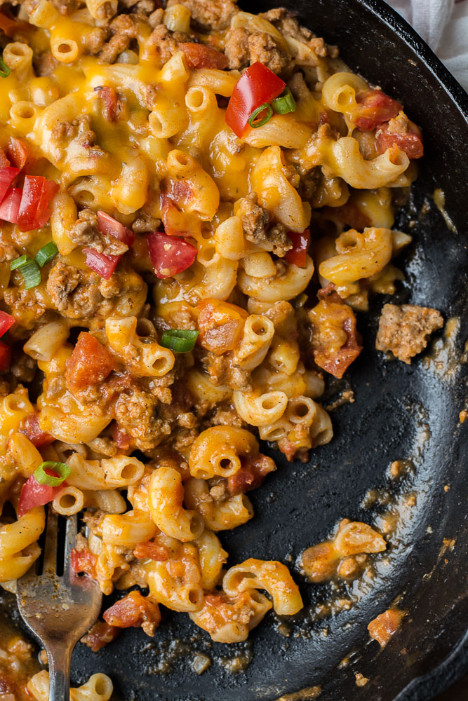

Recipe : Taco Mac

Taco mac is where comfort food transforms into a fiesta on your tongue.
It involves, a personal favorite mac n' cheese with a
Mexican twist.
What You'll Need
- 1 lb of Ground Beef
- 1/2 onion chopped
- Jalepeno Seeded and Sliced
- 2 Roma Tomaotoes Cubed
- Taco mix
- 1 tub of White Cheese Dip
- Cilantro
- 1 pack of Sazon Goya
How to Make it
- Start by browning your beef in a skillet with your seasoning
- When the beef is almost cooked add in your vegetables
- After your beef/veggies are cooked through empty the cheese dip into the skillet and simmer on low heat
- while the the flavors of the mixture develop, begin boiling a pot of water large enough for your elbow noodles
- once the water begins boiling add your pasta and cook until al dente
- once your noodles are cooked add them to the skillet
- Stir and Serve